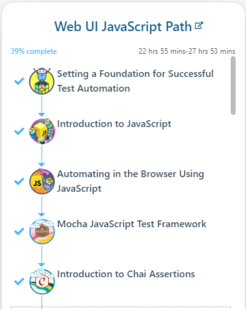

Cypress general documentation
- Getting started
- Cypress web-site
- Training/courses
- Ambassadours/experts
- Filip Hric
- Gleb Bahmutov
- Selected useful tips, tricks and modules
Getting started
Cypress web-site
Documentation
Training/courses
Cypress.io
This course looks very promising starting from scratch and explaining "everything" on the way:
Test Automation University
General and introduction
These courses give you a general foundation and overview of the building blocks cypress testing consist of:
- https://testautomationu.applitools.com/setting-a-foundation-for-successful-test-automation/
- https://testautomationu.applitools.com/javascript-tutorial/
- https://testautomationu.applitools.com/automating-in-the-browser-using-javascript/
- https://testautomationu.applitools.com/mocha-javascript-tests/
- https://testautomationu.applitools.com/chai-test-assertions/
- https://testautomationu.applitools.com/cypress-tutorial/
The courses mentioned above are the first 6 ones listed in the Web UI JavaScript Path:


Advanced/others
- https://testautomationu.applitools.com/advanced-cypress-tutorial/
- https://testautomationu.applitools.com/cypress-with-typescript/
API testing
- https://applitools.com/event/test-your-api-with-cypress/
- https://www.youtube.com/watch?v=mPZJdAH1alc
Ambassadours/experts
Filip Hric
- frequently new cypress tips on his blog
- courses
- workshops